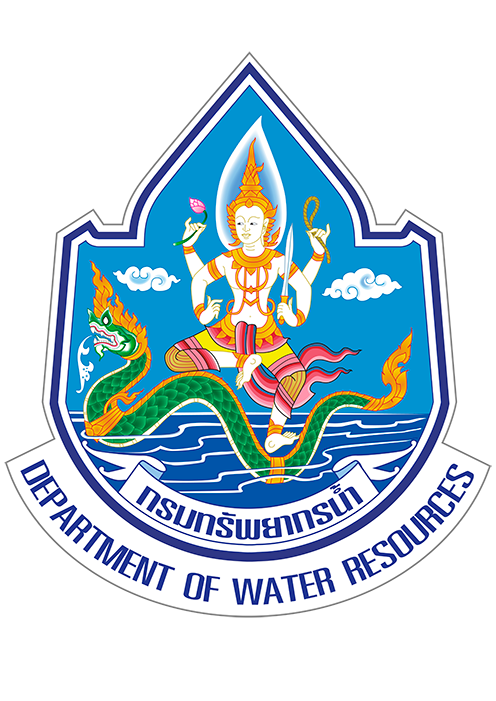
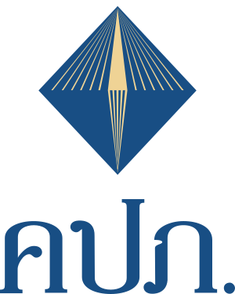
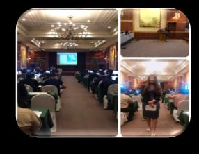
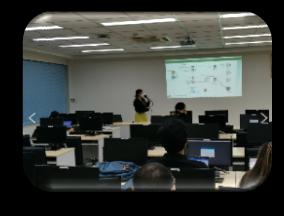
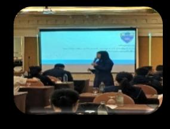
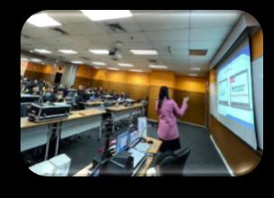

Intelligent Forecasting
AI and machine-learning solutions delivered for enterprise operations.
- ML Demand Forecasting & AI Dashboard
- Anomaly Detection
- OCR & AI Chatbot
- Model Development, MLOps & Vision
- Microsoft 4 Program
AI & IT PROJECT MANAGER · BUSINESS ANALYST
My strength is seeing the big picture and aligning business and technology to achieve common goals.
I bridge executives, business users, vendors, and technical teams while leading cross-functional and international teams.
I manage scope, schedule, cost, risk, quality, and resources to deliver measurable business value using CMMI, ISO, EA, CompTIA Project+, and PMP best practices.
Project Portfolio
AI and machine-learning solutions delivered for enterprise operations.
e-Service platforms, e-work permit, digital medical certification, and citizen-facing government systems.

Department of Water Resources
Office of Insurance CommissionSecure identity and citizen-service platforms.
Analytics platforms turning operational data into decisions.
Cloud, application, and enterprise technology ecosystems.
Connected field systems and intelligent monitoring solutions.
Client Training Sessions
Delivered practical technology training for up to 120 participants per session, helping users understand and confidently adopt new systems.




Experience
Stelligence Co., Ltd.
Delivered AI and data initiatives for 11 government and 9 private-sector clients, spanning ML demand forecasting and dashboards, Microsoft programs, anomaly detection, OCR, chatbots, Power BI, and Tableau. Managed projects valued up to THB 15.5M across oil & gas, tourism, e-work permit, and IT software.
Chanwanich Co., Ltd.
Led 8 government projects valued up to THB 42M, including biometric screening platforms, digital medical certification platforms, Mobile ID3, e-service platforms, and cybersecurity infrastructure.
PTT Digital Solutions Co., Ltd.
Supported business analysis and solution delivery by translating stakeholder requirements into clear plans and actionable specifications for technology teams.
SF Corporation Public Co., Ltd.
Supported business analysis at assistant manager level, coordinating business requirements and technology delivery across stakeholders.
Sigma Intergroup Co., Ltd.
Provided project consulting and helped connect business objectives, stakeholder expectations, and implementation activities.
D.T.C. Enterprise Public Co., Ltd.
Managed 5 government and 2 private-sector projects valued up to THB 48M, including CCTV on-car cameras, vending machines, Surat Thani zoning GIS and analytics platforms, Meter Phase 5, IoT, and intelligent monitoring platforms. Served clients across retail, beverage, and banking.
Billion Broker Co., Ltd.
Provided IT support within the insurance sector, helping maintain reliable day-to-day technology operations and user services.
Jsiam Enterprise Co., Ltd.
Managed helpdesk support operations and service delivery, building the operational foundation for a career in technology and project leadership.
Core expertise
Agile · Scrum · Waterfall · UAT · SIT · Risk · Vendor · Stakeholder · Quality
GenAI · LLM · Chatbot · Model Development · MLOps · Vision · OCR
Azure · AWS · Google Cloud · Cloud Migration · CI/CD · API · Integration · Cybersecurity
SQL · NoSQL · Data Pipeline · Governance · Tableau · Power BI · Alteryx
Tools & Platforms
Learning
National Institute of Development Administration · GPA 3.70 · NCCIT 2025
King Mongkut's University of Technology North Bangkok · GPA 2.37
Certifications & training
LET'S BUILD WHAT'S NEXT
Project Manager | Business Analyst | Digital Transformation | AI | Data | System Integration